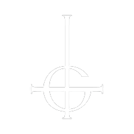
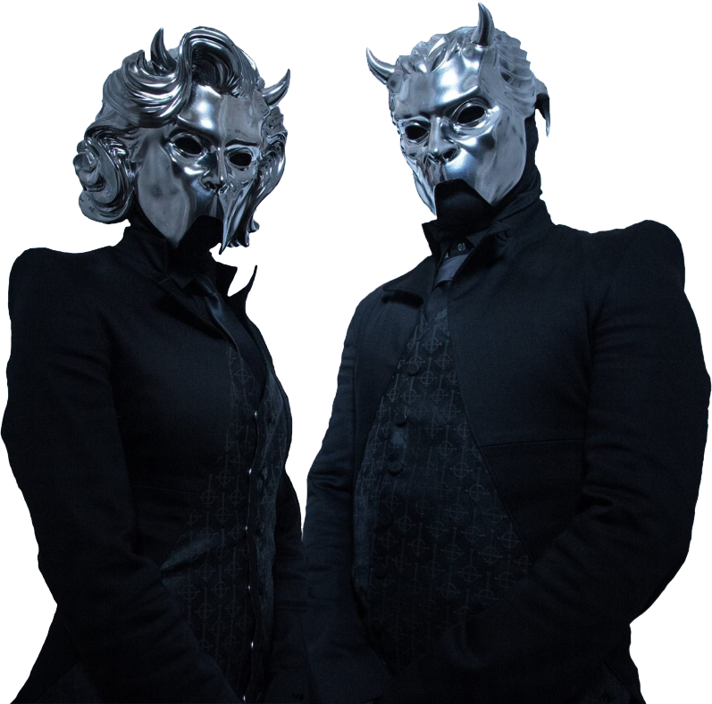

Surgimiento |
|
|  | Ghost es una banda sueca de Hard Rock, formada en Linköping, Suecia en 2008. En
el año 2010
lanzaron un demo de tres canciones, seguido por el sencillo en vinilo de «Elizabeth» y más tarde
por su álbum debut Opus Eponymous. Este último recibió principalmente críticas positivas y ayudó a
aumentar de manera considerable la popularidad del grupo, además de ser nominado a los Grammis
(mayor distinción otorgada a la música en Suecia). Su segundo álbum de estudio, Infestissumam, fue
publicado en 2013, debutó en el número 1 en Suecia y ganó el Grammis por mejor álbum de Hard
Rock/Metal. La banda publicó su tercer álbum de estudio, Meliora, en 2015, el cual tuvo muchísimas
críticas positivas y alto índice de ventas, lo cual lo provocó que este alcanzara el número 1 en su
país natal y el número 2 en los Estados Unidos, además darle a la banda su primer Grammy
estadounidense. A principios de abril del año 2017, se publicó que los "Nameless Ghouls (Gul sin
nombre)" se encontraban demandando al Papa Emeritus (Tobias Forge) por mal uso de repartición de
regalías. Su último álbum de estudio hasta la fecha, se publicó en el año 2018, este fue titulado
«Prequelle». En septiembre de 2019 sale a la luz el EP titulado Seven Inches of Satanic Panic, con
dos temas titulados Kiss the go-goat y Mary on a Cross. Ghost es fácilmente reconocible por su excéntrica presentación en directo. Cinco de los seis miembros de la banda se visten virtualmente idénticos y cubren sus caras con máscaras. El miembro más destacable de la banda es el vocalista, el cual viste una cara protésica con el dibujo de una calavera, pareciendo lo que se podría describir como un "Antipapa demoníaco". Cada ciclo de álbum ha traído un cambio en la apariencia de la banda. El vocalista siempre retrata el mismo arquetipo de personaje, pero ha tenido leves cambios de apariencia e incluso algunos rasgos de su personalidad han cambiado desde las versiones anteriores. |
Estilo musical |
|
La música de Ghost ha sido categorizada en varios géneros, aunque los críticos usualmente lo clasifican como heavy metal, doom metal, hard rock, y menos comúnmente como rock progresivo y rock psicodélico.Adrien Begrand de PopMatters afirmó que Ghost hace recordar a "el sonido de la joven Black Sabbath, Pentagram, y Judas Priest, al igual que al rock progresivo y psicodélico de fines de los 60". Hablándole a Noisey.com, un Nameless Ghoul describió a Ghost como una banda de black metal en el sentido tradicional, pero dijo que probablemente no encajarían en las normas de el black metal actual. Este Nameless Ghoul describió a Ghost como una mezcla entre el pop y el black metal. Por otra parte, la banda es frecuentemente comparada con Blue Öyster Cult y Mercyful Fate. En otra entrevista, un Nameless Ghoul dijo que ellos eran influenciados por "todo que esté en un rango desde el Rock clásico hasta las bandas más extremas de metal del bajo mundo de los ochenta y desde bandas sonoras de películas hasta la grandeza de la emocional música armónica." Otro miembro de la banda dijo que el black metal sueco y escandinavo de los noventa juega un mayor papel en sus influencias, y también dijo que cada miembro de la banda vino de un entorno de metal diferente. Sin embargo, la banda ha fijado varias veces que ellos no apuntan a ser una banda de metal. Para su segundo álbum, Ghost eligió un estilo de composición más diverso; un miembro dijo, "intentamos deliberadamente que cada canción tenga su propia firma". Solo dos miembros actualmente escriben las canciones; el vocalista Papa Emeritus no es uno de ellos. Los escritores pueden componer un contorno de canciones antes de que la instrumentación sea unida así que suena como un grupo, en lugar de ser dominado por la guitarra. Sus letras son descaradamente satánicas; un Ghoul dijo, "el primer álbum trata sobre la próxima llegada del Demonio, hablando mucho en términos bíblicos, algo como que la Iglesia diga que el Día del Juicio Final se acerca. Infestissumam es acerca de la presencia del Demonio y el Anticristo". Sin embargo, la banda ha dicho varias veces que su imagen es todo como la lengua en la mejilla, citando que "No tenemos una agenda. Somos un grupo de entretenimiento". Infestissumam también trata con "cómo la gente le refiere a una deidad o un Dios, temas como la submisión y la superstición, los horrores de ser religioso". Adicionalmente, un Nameless Ghoul dijo que el segundo álbum es acerca de "Como la humanidad—predominantemente hombres—lo que han considerado ser la presencia del Demonio, a través de la historia e incluso hoy día. Y eso es porque el álbum está cargado con temas sexuales y femeninos. Eso es básicamente todo, la inquisición fue básicamente hombres acusando mujeres de ser el Demonio solo porque ellos tenían una erección por ellas". La teatrilidad del grupo está influenciada por Kiss, David Bowie y Alice Cooper, pero un miembro dijo que eran más influenciados por Pink Floyd. |
|
Miembros |
|
|  |
|